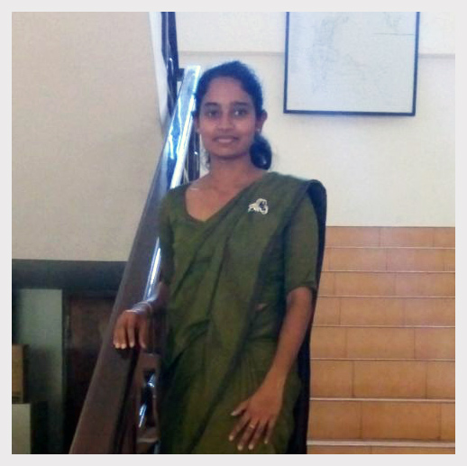
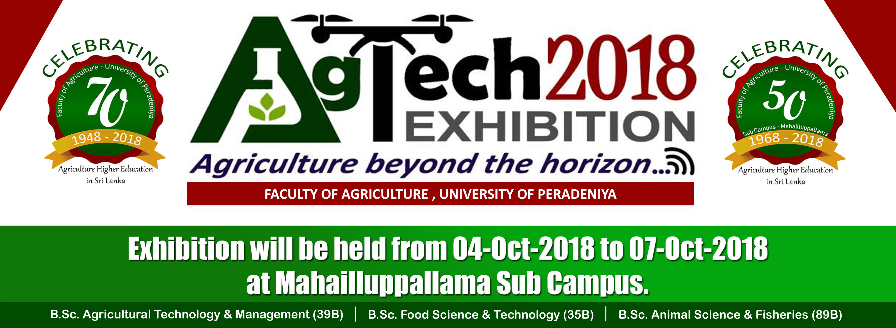

Faculty of Agriculture, University of Peradeniya // කෘෂිකර්ම පීඨය, පේරාදෙණිය විශ්ව විද්යාලය // விவசாய பீடம், பேராதனை பல்கலைக்கழகம்
Test your strength for starting a new venture // නව ව්යාපාරයක් ආරම්භ කිරීම සඳහා ඔබේ ශක්තිය පරීක්ෂා
කරන්න // ஒரு புதிய துணிகரத் துவங்குவதற்கு உங்கள் பலத்தை சோதிக்கவும்

Welcome to Entrepreneurship Clinic! My name is Ruwini Daundasekara, and I'm
an undergraduate student in university of Peradeniya, Faculty of Agriculture, Department of Agriculture Economics and
Business Management. This is an application of the General measure of Enterprising Tendency (GET) test that was developed
in 1988 by Dr Sally Caird and Mr Cliff Johnson at Durham University Business School. // ව්යවසායකත්ව සායනයට සාදරයෙන්
පිළිගනිමු! මගේ නම රුවිනි දවූන්ඩ්සේකර . මම පේරාදෙණිය විශ්ව විද්යාලයේ කෘෂිකර්ම පීඨයේ කෘෂි ආර්ථික විද්යා හා ව්යාපාර කළමනාකරණය
පිළිබඳ උපාධි අපේක්ශිකාවකි. 1988 දී වෛද්ය සැලි විසින් වර්ධනය කරන ලද (GET) පරීක්ෂණයෙහි සාමාන්ය යෙදුම මෙය වේ.
What is AgTech 2018 ?

This is to Celebrate 70 Years of Agriculture Higher Education in Sri Lanka (1948-2018)
& 50 Years of Services of Mahailluppallama Sub Campus (1968-2018). The theme of the exhibition is “Agriculture beyond
the Horizon - Krushikarmaya Ksithijayen Obbata”. // ශ්රී ලංකාවේ කෘෂිකාර්මික උසස් අධ්යාපනය 70 වසරක් (1948-2018) සැපිරීම
සහ මහඉලුප්පල්ලම අනුබද්ධිත විශ්වවිද්යාලයේ අවුරුදු 50 ක සේවා සැපයීම (1968-2018) නිමිත්තෙන් "කෘෂිකර්මය ක්ෂිතිජයෙන් ඔබ්බට
" යන තේමාව යටතේ පැවැත්වෙන ප්රදර්ශනයකි .
Results
Congrstulations!!!// සුබපැතුම් !!
Thanks for answering our set of quections. We have gone through your answers and we calculated
your ENTREPRENERURSHIP TENDRNCY using them. // අපේ ප්රශ්න මාලාවට පිළිතුරු සැපයු ඔබට ස්තූතියි. ඔබගේ ව්යවසායකත්ව ප්රවනතාවය
පහත පරිදිය.